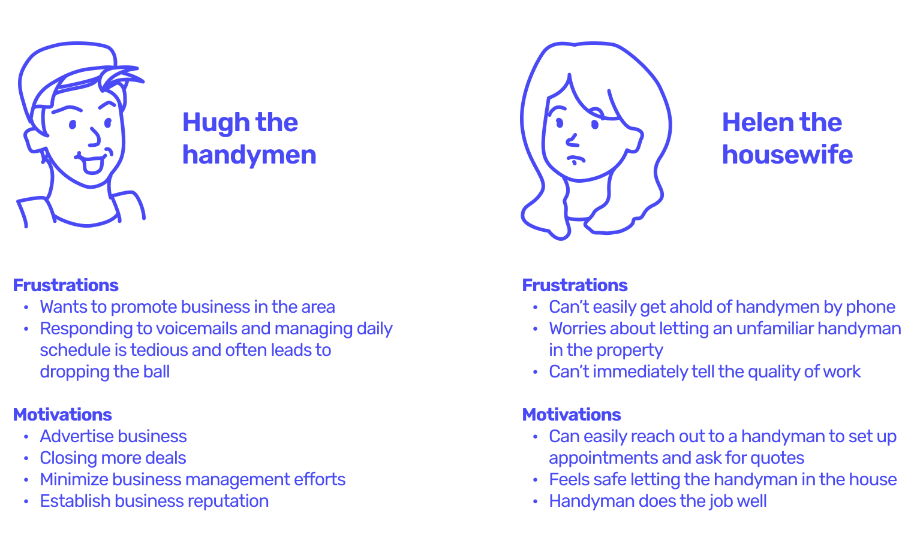
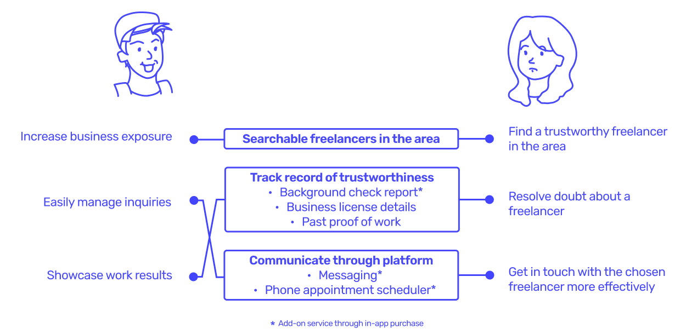
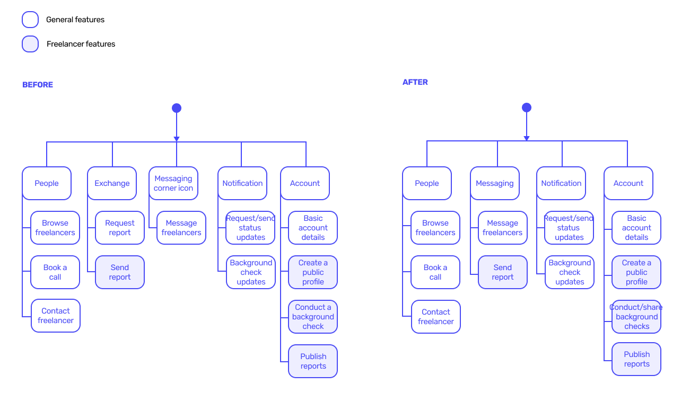
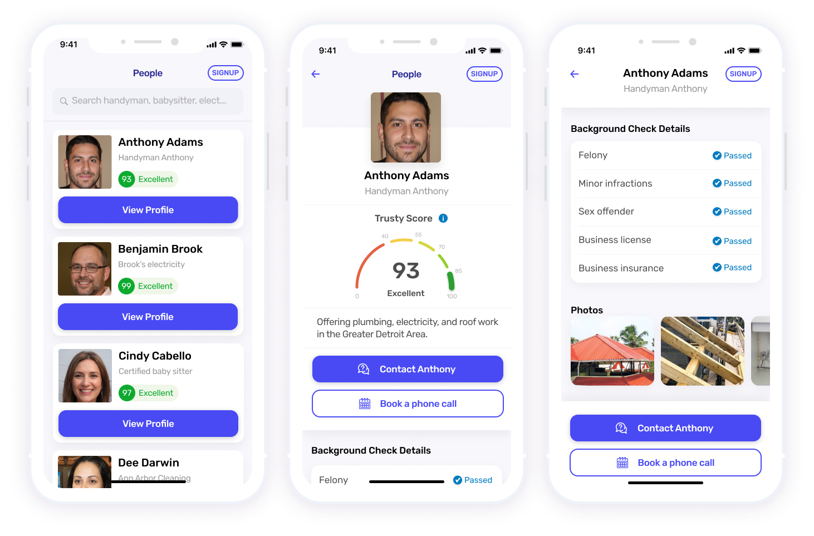
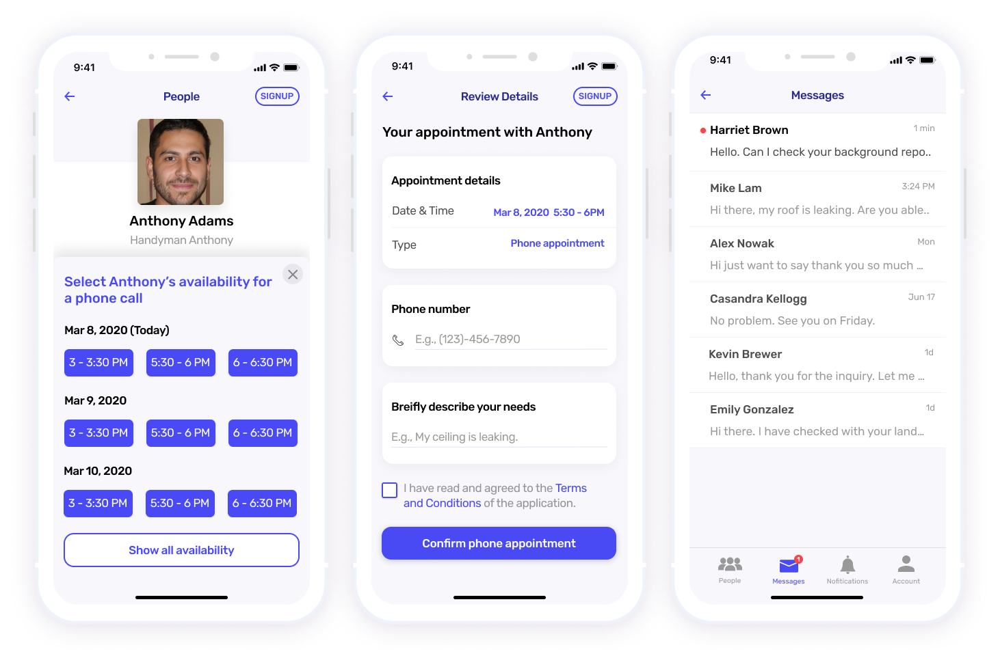
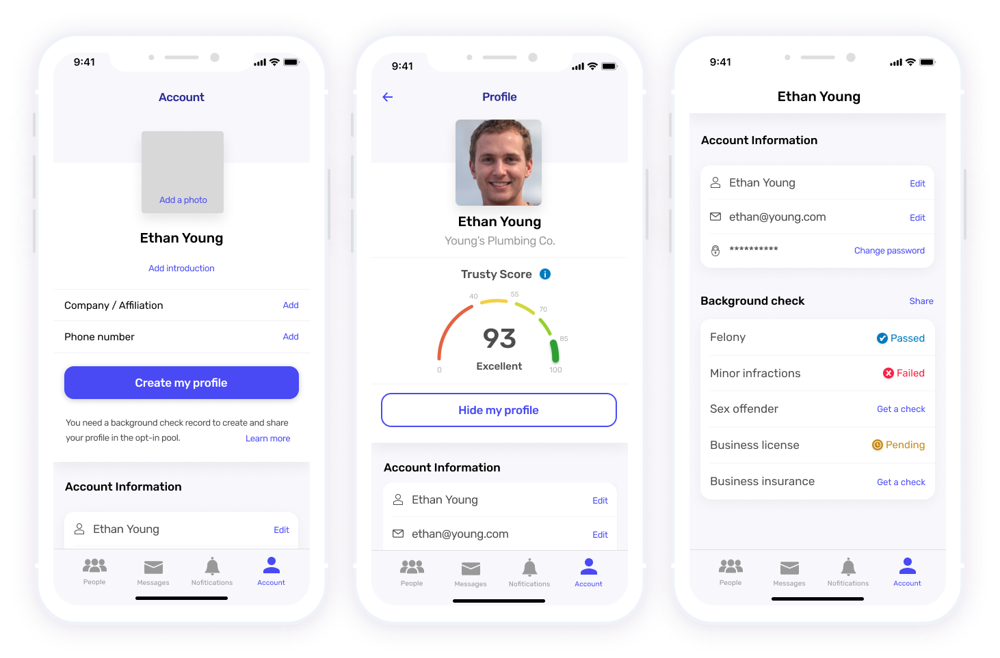
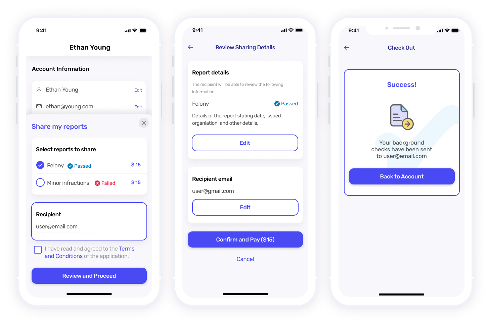

YourCheck
As a UX desginer at the Zell Lab for Technologies, I worked with a student startup YourCheck to design a mobile background check platform that helps freelancers establish and manage reputation, while enabling customers to easily find trust-worthy freelancers.
Project duration
1 semester
Jam 2020 - Apr 2021
My role
Product designer and researcher,
working with the founding members
under mentorship of ZLT program
Skills used
User interviews
Mobile app design
Brand design
User testing
Tools
Figma
Miro
THE BACKGROUND
Design clinic for the student startup
YourCheck is a startup with the vision to empower customers and freelancers to build trust by making background checks easier to conduct. However, without any design resources and a working prototype, it had been difficult for the founding team to showcase product value in front of investors.
Working with the program manager and the founding team of four, we kicked off a semester-long project to examine the startup's business model, interview users to redefine opportunities and user pain points, and come up with design solutions used in future pitches.
BASELINE RESEARCH
Discovering opportunities for product growth
To establish the baseline and test the product concept, I conducted a series of research to onboard myself with the project.
Research activities to understand product baseline
Based on desk research, I was able to learn about customers' struggles when hiring freelancers, including handymen, babysitters, electricians, and more. However, from concept testing it turned out even potential customers were unclear about how the product works and why it mattered to them -- the idea seemed too privacy-prying and adds more hassle. The branding elements of the website were also perceived to be outdated and untrustworthy. Additionally, by examining the existing product features, competitive landscape, and business model with the program manager, we also raised concerns about how existing product features may lack a competitive edge and could be easily replaced by larger industry players.
ACTION PLAN
Scoping the project
With the above findings from baseline research, the team laid out an action plan over the semester:
- Provide more modern visual representation across all user-facing venues
- Provide mocks for the core experience so a POC that can be built to showcase in competitions and events
- Propose a design concept to expand the product's current feature sets
- Revamp website content to deliver messages more effectively
In the following paragraphs, I will discuss the process of expanding the product feature sets from its core experience of background exchange.
BRAINSTORMING
From a background check tool to a full-fledged freelancer platform
Perhaps the most challenging yet exciting part of this project, the team was tasked to come up with unique features in addition to exchanging background check reports to set the product apart from competitors. To better align our understanding of user pain-points, we pin-pointed a specific usage scenario to start with: handymen and housewives.

The team primarily used the handyman and housewife persona to brainstorm value-adding features.
We found that although different personas have distinct needs, they eventually wanted to close business deals more efficiently and satisfactorily. For customers, "trust" is more than knowing if a freelancer has criminal records, but also if they will do great work and are responsive. For freelancers, an easier way to build trust will boost their business, which is something they wouldn't say no -- bonus point if they can reduce time to manage their buseinss more effectively.
With above insights gathered from research synthesis, we looked into expanding the product features to solve other issues in freelancer-consumer interactions -- by bridging the two personas with a freelancer platform to help create more business opportunities with established trust.
Original product flow only covered requesting and exchanging background check report, which solves only one trust issue in freelancer-consumer interactions

Brainstormed features for a freelancer platform and how it solves different user problems as freelancers and consumers interact
DESIGN PROCESS
Designing for the freelancer platform
In parallel with the original background check exchange tool, I started designing for the MVP of the freelancer platform based on brainstormed features. These included the sign-up process, a browsing interface for opted-in freelancers, scheduling and messaging features, as well as account management.
Considerations for the freelancer profile page
While designing the profile page of the freelancer platform, one challenge was to determine the information displayed on the profile page that sets the product apart from the competitors. Looking at competitor features, we found that background check information is not disclosed upfront, which requires consumers to put in extra effort to be reassured.
Comparative analysis of information related to trust-worthiness of a freelancer
However, we also found it could be tedious for consumers to read through background check report details and understand the significance of it. Therefore, we came up with a feature that uses a generative score to signify trustworthiness. Unlike other review systems, we envisioned this score should incorporate the freelancer's background information as well, allowing users to get a quick sense about the freelancer in consideration.
Different design versions of the 'trusty score'
Design changes: rearchitecting the app
As we proposed to turn the background check exchange tool into a freelancer platform, I realized the original background exchange feature might create unnecessary confusion and complexity. Therefore, I proposed to remove the tab for exchanging and requesting background check reports, reducing the number of the menu items to four, while keeping the same functionality in the account management and messaging features.

I redesigned the structure of the app to make the background check feature more seamless
Branding and style guide
After a few iterations and communication with the team, I've also created a set of visual assets and a style guide to be used for the website and app.
Redesigned logo and style guide
FINAL DELIVERABLE
YourCheck freelancer platform product concept
At the end of the program, the design clinic proposed a product design concept for the startup team ready for concept testing and validation.
1. Find trustworthy freelancers around
Use the platform to search for trustworthy freelancers in your areas such as handymen, housekeepers, and more. Each freelancer profile includes an opted-in background check summary and a generative trusty score to provide peace of mind for customers and help promote business for freelancers.

2. Hassle-free appointment and messaging features
Instead of wasting time on the phone without responses or leaving voicemails not knowing when it will be handled, prospective customers can use the platform to schedule phone appointments or leave text messages. Freelancers will be notified about new cases and can communicate with customers more efficiently.

3. Business profile management
Freelancers can create online business profiles to establish their business reputation by sharing their up-to-date background check summary, business licenses, work photos, and more.

4. Share background check reports with customers
Freelancers can also share detailed background check reports with prospective customers.

LEARNINGS AND REFLECTIONS
Working through ambiguity and constraints
This was the first mobile project I've designed for a multi-user facing platform, where I gained experience in product thinking and mobile app design. The biggest lesson I've learned throughout this project was to design in ambiguity.
One of the project constraints was limited access to freelancers until later in the project. I've learned to use desk research data to create designs that make the most sense. If we had more time, I'd dive deeper into the impact of proposed features such as the trusty score and how to ensure an ethical design.